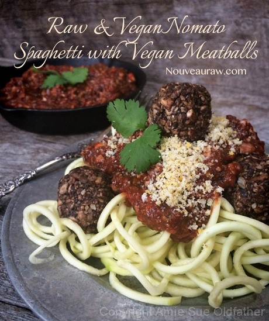

Spaghetti with Vegan Meatballs (Night-Shade Free)

~ raw, vegan, gluten-free, nut-free ~
This dish was inspired by a subscriber (C0c0) who asked me if I could create a pasta tomato sauce without tomatoes, and ketchup too! I will be honest, at first, I thought that she was trying to pull my leg, but after I had asked a few questions, I realized that she was sensitive to nightshades. Then it all made sense, it was a challenge, but a fun one for sure.
My mom makes amazing spaghetti. Anytime there was a family function, any type of gathering, together, or a simple event that required a small celebration… mom was always enlisted to make spaghetti.
I will never forget my first date; his name was Peter. My parents were pretty, ah no, VERY strict with me growing up, and dating was supposed to have been forbidden till I was 36 years old. But somehow I twisted my dad’s arm to let me, at the age of 15, to bring a boy home. To my dad, a date at that age meant “bring-that-boy-home-so-I-can-stare-holes-through-him. You know, the kind of date that makes everyone squirm in their chair except for dad.
Mom had been busy planning “our family date night dinner.” I was so nervous, not for me, but for poor Peter, that I never asked mom what she was going to make. The doorbell rang, and it was Peter, his dad had dropped him off. Mom dished up spaghetti good and high on everyone’s plate. SPAGHETTI on date night!!! Oooooh no… How could she, didn’t mom know that noodle slurping, face slapping, sauce dripping spaghetti didn’t make for a good impression?
We all sat in slurping silence, mouth puckering, noodle inhaling, red lip dripping silence. Dad was at the head of the table. He never broke cadence of his rough-looking exterior as he chowed down on not just one or two but three helpings. Poor Peter, he didn’t dare look up. I watched his hand tremble, fighting hard to keep the noodles wound around the fork, he had sauce all over his face. I felt bad for him. Poor guy, sitting there was sauce all over his face, all over his shirt, hands trembling, voice cracking.
I kept my composure, proud that I made it through dinner without flinging spaghetti everywhere (which was common for me). I sat up straight in my chair, brushed my hair back, wiggled in girly glee, giving Peter a look with fluttering eyes, as if I were a princess. I was so perfect and composed. After dinner, he rose from his chair… his dad was outside honking the horn.
I don’t think I had ever seen that boy move so fast as he did to get out of the house. I went into the bathroom to let out that breath of, “Ok dad, you got a deal… age 36 isn’t so far off”. I didn’t want to go through that again. I looked into the mirror and leaned closer. I had red stained spaghetti sauce lips, a clump of sauce on my nose, my face was covered with tiny dots of sauce as though they were freckles.
I even had a line of red sauce across my neck as though a darn noodle tried to laso me!… aaaaagh! The moral of this story is… for you mom’s who make the world’s best spaghetti… Please don’t make this dish for your child’s first date night dinner with the family. Lol Not unless you want she or him to be writing about it some 30 years later, on a blog for the world to read!
Mushroom “Meat”: 2 cups
- 1 lb (8 cups) baby portobello (crimini) mushrooms, rough chopped, stems removed
- 4 Tbsp sunflower seeds, soaked and dehydrated
- 1 Tbsp onion powder
- 1 tsp dried thyme
- 1 tsp dried fennel seeds
- 1/2 tsp sea salt
- 1/4 tsp black pepper
Tomato Sauce: yields 1 1/4 cup
- 1 cup raw pumpkin puree or canned
- 1/4 cup beet juice
- 1 Tbsp raw coconut crystals
- 1/4 cup raw apple cider vinegar
- 1 tsp sea salt
- 1/2 tsp onion powder
- 1/2 tsp garlic powder
- 1 tsp Italian seasoning
- 1 tsp dried minced onion
- 1/2 tsp black pepper
- 1/2 tsp psyllium husk powder
Zucchini noodles:
- 1 large zucchini per person
Preparation:
Mushroom “Meat”:
- Pulse the mushrooms in the food processor, fitted with the “S” blade. It should break down to the size that resembles ground beef.
- In a spice grinder combine the sunflower seeds, onion powder, thyme, fennel seeds, salt, and black pepper. Grind long enough for the sunflower seeds to break down to a powder.
- Toss the mushrooms and seasoning together and spread out on the teflex sheet that comes with the dehydrator.
- Dry at 115 degrees (F) for about 30 mins. Remove and stir, then slide back in for another 30 minutes. The mushrooms will darken, this is normal.
- Mix the mushroom meat with the tomato sauce.
- To make the meatballs, take 1 cup of the meat sauce and make meatballs with a tablespoon measuring spoon. Roll into a ball and place on the mesh sheet that comes with the dehydrator and dry for 2-4 hours.
- If the meatballs are too wet, add 1-2 Tbsp ground flax seeds. Mix and let sit for about 10 minutes.
Tomato Sauce:
- To make raw pumpkin puree, see the link above in the ingredient list. If you are not able to locate fresh sugar pumpkins and if you are ok with it, you can use canned. Be sure to get organic, BPA-free pumpkin puree without any other added ingredients.
- In a blender combine the pumpkin puree, beet juice, coconut crystals, apple cider vinegar, salt, onion powder, garlic powder, Italian seasoning, minced onion, black pepper, and psyllium husk powder. Blend until smooth.
- Pour into an airtight container and store in the fridge for about 7 days.
© AmieSue.com